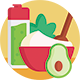
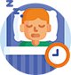

-
1직장인 Well-Being진단 소개
-
2직장인 Well-Being진단 결과해석
-
3나의 웰빙지수
-
4웰빙 구성요소별 점수
-
5웰빙 구성요소별 변화 추세
-
6정신 건강과 웰빙을 위한 Tips
1직장인 Well-Being진단 소개
본 진단에서 의미하는 '웰빙'은 육체적·정신적으로 안정되고 행복을 느끼며, 높은 삶의 질을 느끼는 상태입니다.
안정된 삶과 행복을 느끼는 것은 만족스러운 삶을 살아가는데 중요합니다.
직장인 웰빙은 '정신적', '물리적', '업무적', '개인적' 차원의 영향을 받아 결정되며, 20가지 하위요소로 구성되어 있습니다.
본 진단을 통해 자신의 '업무적 삶'과 '개인적 삶'에 대한 웰빙수준과 웰빙을 구성하는 요소별 웰빙점수를 확인할 수 있습니다.
더 나아가 자신과 국내 전체 직장인의 웰빙수준을 비교한 종합 웰빙지수를 확인할 수 있습니다.
본 진단을 통해 귀하의 현재 웰빙 상태를 알아보고, 삶의 질을 높이기 위한 시사점을 찾으시기 바랍니다.
직장인Well-Being구성요소
- 영성/신앙생활
- 자존감/자신감
- 친구들과의 친밀감/우정
- 배우자/연인의 사랑
- 자녀/부모/형제/자매와의 관계
- 성취감
- 자율성
- 조직 내 인정
- 상급자의 리더십
- 직장 내 대인관계
- 남을 위한 봉사/기부
- 취미생활
- 건강/운동/영양상태
- 외모
- 경제적 여유/안정
- 권한/권력
- 학습환경
- 참여활동
- 근무환경
- 급여/보상
2직장인 Well-Being진단 결과해석
직장인 Well-Being진단 결과를 해석할 때 참고해야 할 사항은 다음과 같습니다.
- '직장인 웰빙지수'란?
-
웰빙지수란 직장인의 웰빙을 구성하는 20가지 요소들의 종합적인 자기인식 수준을 국내 직장인 평균과 비교한 점수입니다.
만족도가 높을수록 / 기대치(중요도)보다 만족도가 높을 수록 / 기대치가 높은 요인의 만족도가 높을 수록 / 기대치와 만족도가 일치하는 경우 웰빙지수가 높게 산출되며, 웰빙지수가 높을 수록 현재 삶의 질에 대한 만족도가 높음을 의미합니다.
- 직장인 Well-Being진단 결과의 이해
-
직장인 Well-Being진단은 직장인의 웰빙을 정신적, 물리적, 업무적, 개인적의 4가지 차원으로 나누어 보고 있습니다.
진단을 통해 4가지 차원에 속하는 20가지 구성요소의 웰빙점수*를 산출하여 귀하의 웰빙 상태를 점검합니다. 또한 국내 직장인의 평균적인 웰빙 상태에 비해 귀하의 웰빙 상태를 확인할 수 있도록 종합 웰빙지수** 및 업무적 삶과 개인적 삶의 웰빙지수를 제공하며, 20가지 구성요소에 대해서는 백분위를 제공합니다.웰빙지수와 백분위를 통해 자신의 웰빙수준이 국내 직장인에 비해 어느 정도 높고 낮은지 상대적으로 비교해볼 수 있습니다.
백분위는 "상위"를 기준으로 제시됩니다. 예를 들어, '자신감/자존감'의 백분위가 상위 20%인 경우, 자신의 '자존감/자신감'에 대해서 상당히 만족하고 있다는 뜻이고, 상위 75%인 경우는 하위 25%에 해당하여 상당히 낮은 수준으로 만족하고 있다는 것을 의미합니다.[각 점수 범위의 해석]
직장인 Well-Being진단 결과의 이해 웰빙지수 0 35 45 55 65 100 기준집단 내 비율 약 7% 약 24% 약 38% 약 24% 약 7% - * 웰빙점수: 20가지 웰빙요소별 응답 결과를 100점 만점으로 환산한 원점수
- ** 웰빙지수: 국내 직장인 평균에 대한 개인의 웰빙 종합점수를 비교하여 나타낸 수치
- 결과 해석 시 주의사항
-
직장인 Well-Being진단은 귀하의 절대적인 행복수준을 측정하는 진단이 아닙니다. 본 진단은 직장인의 웰빙을 구성하는 요소에 대해 귀하가 느끼는 정도를 확인하고, 국내 다른 직장인들과 비교한 결과를 알아보는 진단입니다. 따라서 귀하의 전반적인 웰빙 수준과 웰빙을 구성하는 요소들 중 어떤 요소가 높거나 낮은지를 이해하며 앞으로의 행복한 삶을 위해 준비하는데 활용하는 것이 바람직합니다.
3나의 웰빙지수
귀하의 현재 웰빙지수와 웰빙지수 변화 추세는 다음과 같습니다.
- 종합 웰빙지수
-
국내 직장인의 웰빙수준과 비교한 귀하의 종합 웰빙지수는 다음과 같습니다.
나의 웰빙지수나의 웰빙지수종합 웰빙지수 나의 종합 웰빙지수 0점 (상위0%) 종합 웰빙지수 나의 업무적 삶에 대한 웰빙지수 나의 개인적 삶에 대한 웰빙지수 0점 (상위0%) 0점 (상위0%)
- 나의 웰빙지수 변화
-
종합 웰빙지수업무적 삶 웰빙지수개인적 삶 웰빙지수
4웰빙 구성요소별 점수
직장인 웰빙에 대한 구성요소별 귀하의 응답 결과(원점수)는 다음과 같습니다.
| 구분 | 해당 요소 | 순위 | 0 | 원점수 50 |
100 | 백분위* | ||
|---|---|---|---|---|---|---|---|---|
개인적 &정신적 |
영성/신앙생활 |
배경 2.6
2.7
|
||||||
| 자존감/자신감 |
배경 2.8
2.9
|
|||||||
| 친구들과의 친밀감/우정 |
배경 2.7
3
|
|||||||
| 배우자/연인의 사랑 |
배경 3.4
3.2
|
|||||||
| 자녀/부모/형제/자매와의 관계 |
배경 2.4
2.7
|
|||||||
개인적 &물리적 |
남을 위한 봉사/기부 |
배경 2.6
2.7
|
||||||
| 취미생활 |
배경 2.8
2.9
|
|||||||
| 건강/운동/영양상태 |
배경 2.7
3
|
|||||||
| 외모 |
배경 3.4
3.2
|
|||||||
| 경제적 여유/안정 |
배경 2.4
2.7
|
|||||||
업무적 &정신적 |
성취감 |
배경 2.6
2.7
|
||||||
| 자율성 |
배경 2.8
2.9
|
|||||||
| 조직 내 인정 |
배경 2.7
3
|
|||||||
| 상급자의 리더십 |
배경 3.4
3.2
|
|||||||
| 직장 내 대인관계 |
배경 2.4
2.7
|
|||||||
업무적 &물리적 |
권한/권력 |
배경 2.6
2.7
|
||||||
| 학습환경 |
배경 2.8
2.9
|
|||||||
| 참여활동 |
배경 2.7
3
|
|||||||
| 근무환경 |
배경 3.4
3.2
|
|||||||
| 급여/보상 |
배경 2.4
2.7
|
|||||||
5웰빙 구성요소별 변화 추세
정기적인 웰빙진단을 통해 개인적 웰빙수준의 변화 추세를 확인하여, 더 높은 웰빙을 준비하고 실천할 수 있습니다.
- 개인적 삶에서의 웰빙점수 변화
-
개인적인 삶에서의 웰빙지수
구성 요소① 영성/신앙생활② 자존감/자신감③ 친구들과의 친밀감/우정④ 배우자/연인의 사랑⑤ 자녀/부모/형제/자매와의 관계⑥ 남을 위한 봉사/기부⑦ 취미생활⑧ 건강/운동/영양상태⑨ 외모⑩ 경제적 여유/안정
- 업무적 삶에서의 웰빙점수 변화
-
업무적 삶에서의 웰빙지수
구성 요소① 성취감② 자율성③ 조직 내 인정④ 상급자의 리더십⑤ 조직 내 대인관계⑥ 권한/권력⑦ 학습환경⑧ 참여활동⑨ 근무환경⑩ 급여/보상
6정신 건강과 웰빙을 위한 Tips (1/2)
이번 진단으로 현재 귀하의 웰빙상태를 알아보았습니다. 만약 자신의 웰빙을 좀 더 개선하고 싶으시다면,
다음의 10가지 방법을 따라해보세요!
- 1. 웃고 즐기세요
-
걱정으로 불안할 수 있습니다. 현재를 사는 법을 배우고, 미래에 대해 너무 많이 생각하지 않으려고 노력하세요.
걱정하는 사람들보다 더 많이 웃고 행복을 유지하려고 노력하는 사람들이 더 나은 삶의 질을 경험합니다. 한 연구에 따르면 어린이는 하루에 200번, 어른은 15번 웃는다고 합니다. 어린아이처럼 더 많이 웃어보는 것은 어떨까요? 행복해서 웃을 수 있지만, 웃기때문에 행복해질 수 있다는 사실을 잊지 마세요!
- 2. 스스로에게 관대해지세요
-
나의 가장 친한 친구는 나 자신입니다. 그러니 스스로에게 더 친절하게 대해주세요.
기분이 우울할 때, 우리는 스스로에게 가혹하기 쉽습니다. 자신을 다그치는 훈련교관이 되기 보다는 자신을 격려해주는 치어리더가 되어주세요. 지금 자신을 격려하고 칭찬할 만 한 것이 없다고 말할 수 있지만, 특별히 대단한 것을 칭찬하라는 것이 아닙니다. 일상 속에서의 사소한 행동을 칭찬해주세요. 또한 다른 사람을 위해 좋은 일을 한 후, 자신을 칭찬해줘도 좋답니다!
- 3. 주기적으로 운동하세요
-
운동은 스트레스를 줄이는 것은 물론, 항우울제와 비슷한 효과를 가지고 있습니다.
세계보건기구(WHO)는 ‘일주일 최소 150분 운동’을 공식적으로 추천했고, 이는 하루에 30분씩 5일간 짧은 운동을 하면 되는 양입니다. 점심시간이나 쉬는 시간을 이용해, 산책을 하거나 계단을 오르내리는 것만으로도 스트레스를 줄이고 주의력을 높일 수 있습니다. 규칙적인 운동은 신체를 건강하게 할 뿐 아니라, 기분을 좋게 하고 집중력을 높이며 불면과 우울 증상을 완화하는데 도움이 됩니다.
- 4. 건강한 식습관을 유지하세요
-

건강한 식생활은 음식에 대한 건강한 태도를 갖는 것을 의미하기도 합니다.
친구들과 함께 식사를 즐기고, 새로운 음식에 도전하고, 음식에 집착하지 않도록 노력하세요. 또한, 자신의 식단과 식습관을 관찰하고 기록하면 더욱 좋습니다. 균형 있는 식단인지, 음식을 너무 빨리/많이 먹지 않는지 살펴보는 것도 건강한 삶을 시작하는 첫 걸음입니다.
- 5. 잠시 멈추고, 호흡을 가지런히 하세요
-
천천히 좋은 호흡을 해보세요.
코로 숨을 들이마시고, 배꼽에서 시작해 갈비뼈, 가슴 및 폐부위를 부풀립니다. 충분히 숨을 마셨다고 생각되면, 천천히 숨을 내쉬세요. 호흡을 하면서 마음 속으로 숫자를 세는 것이 도움이 될 수 있습니다.
6정신 건강과 웰빙을 위한 Tips (2/2)
이번 진단으로 현재 귀하의 웰빙상태를 알아보았습니다. 만약 자신의 웰빙을 좀 더 개선하고 싶으시다면,
다음의 10가지 방법을 따라해보세요!
- 6. 잠자리에 들기 전, 스마트폰은 피하세요
-
잠자기 전 SNS를 확인하는 것은 당신의 숙면을 방해할 수 있습니다.
연구에 따르면 취침 전에 화면을 보는 것은 수면시간을 늦추고 수면의 질에 영향을 줄 수 있다고 합니다. 특히 자기 전 스마트폰를 보는 것은, 눈을 블루라이트에 노출시켜 수면/각성 주기를 조절하는 호르몬인 멜라토닌 생성에 영향을 미친다고 합니다. 숙면을 위해, 가급적 잠들기 전에는 스마트폰의 사용을 피하세요!
- 7. 수면시간을 관리하세요
-

일관된 수면시간은 중요합니다.
미국수면의학회는 10대의 경우 하루에 8~10시간, 20세 이상의 경우 7시간 이상의 일관된 수면시간을 갖기를 권장합니다. 이와 관련하여, 수면 건강 전문가인 Dr. Eleanor McGlinchey는 주말과 휴일에도 매일 같은 시간에 일어날 것을 권장합니다. 매일 아침 같은 시간 일어나는 것, 즉 생체리듬을 동일한 시간에 가져가는 것은 월요일 아침의 피로감과 싸우고 최상의 기능을 발휘할 수 있도록 도와줍니다!
- 8. 타인과 교류하세요
-
친구, 가족, 애완동물과의 교류, 또는 소셜활동을 통한 교류도 좋습니다!
낯선 사람에게 가벼운 인사를 하는 것만으로도 긍정적인 감정을 불러일으키고 우울증과 불안을 예방할 수 있으며 연결되어 있다는 느낌을 받을 수 있습니다. 또, 관계의 양이 아니라 질에 초점을 맞춰보세요. 누군가가 자신에게 행복, 유용, 호감, 사랑 등 긍정적인 감정을 느끼도록 도와준다면 관계를 유지해보세요!
- 9. 힘들다면, 당신을 도와줄 누군가를 찾으세요
-
현재 어려움을 겪고 있다면 도와줄 사람을 찾는 것도 좋은 방법입니다.
힘든 것을 혼자 쌓아 놓기 보다는 친구나 가족에게 말해보세요. 만약 친구나 가족이 당신의 문제와 힘듦에 관심이 없거나 필요한 종류의 지원을 제공하지 않는다면, 보다 전문적인 방법을 찾아도 좋습니다. 의사 또는 정신건강 전문가, 상담사를 찾는 것도 많은 도움이 됩니다!
- 10. 작은 성공을 만드세요
-
작은 성공이 모여야 커다란 변화를 만들 수 있습니다.
자기계발 유명저서인 《스몰빅》에서는 “동기부여는 행동하게 하는 원인이 아니라 행동에서 비롯된 결과”라고 합나다. 즉, 끝까지 지속하게 해주는 원동력은 동기가 아니라 ‘작은 성공’에서 생기며 그 작은 성공이 모일 때 비로소 ‘커다란 변화’를 경험한다는 것입니다. 자신의 일상에서의 ‘작은 성공’을 만드세요. 그게 아무리 작아보일지라도 자신의 자신감/자존감을 높이는 중요한 한걸음일 수 있습니다.

E. assess@psi.co.kr H. www.psi.co.kr